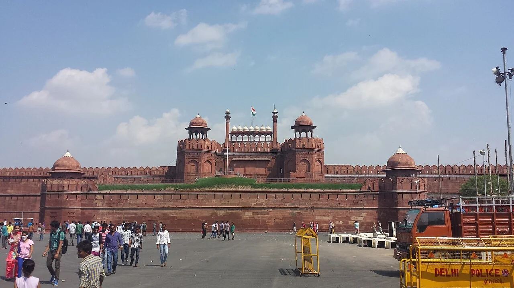

NEIGHBOURHOOD NOTES
Old Delhi
Layered lanes, imperial walls and food worth lingering over.
Explore on the mapFind historical landmarks, cultural attractions, markets, parks and neighbourhood guides. Search by interest or location.


Historical monuments and architecture

Local dishes and food guides

Lesser-known attractions

Markets, crafts and shops

Arts, festivals and traditions

Parks, gardens and green spaces

Spaces for reflection
The city after sunset
Places for family visits

Landmarks and architectural details
Layered lanes, imperial walls and food worth lingering over.
Explore on the mapA market street that rewards curiosity and comfortable shoes.
Explore on the mapColonnades, cafés and a useful starting point for central Delhi.
Explore on the mapDelhi’s medieval layers, seen one stone at a time.
Explore on the mapA reservoir, medieval architecture and contemporary dining.
Explore on the mapMurals, residential streets and room to wander.
Explore on the mapGarden-tombs, poetry and a living neighbourhood.
Explore on the mapA descending flight of stone steps creates a striking pocket of historic water architecture close to central Delhi’s busy streets. The site’s origins attract many legends; these should not be confused with securely established dates.
The surviving fortifications of Ghiyasuddin Tughlaq’s city stretch across rocky ground in southern Delhi. The rugged enclosure offers an impression of medieval defensive ambition far removed from the formal gardens of later Mughal monuments.
Within the Humayun’s Tomb precinct, this earlier garden tomb commemorates the noble Isa Khan Niazi. Its octagonal shape offers a useful comparison with the much larger imperial mausoleum nearby.
Henry Medd’s church combines a restrained classical exterior with red sandstone accents. Close to Rashtrapati Bhavan, it is an active Church of North India cathedral rather than a museum.
Public murals turn a neighbourhood walk into an open-air gallery. It is also a residential area: keep entrances clear and ask before photographing people.
A small memorial in Ballimaran recalls the poet’s later life in Delhi. Pair the visit with a slow walk through the surrounding lanes; confirm current opening arrangements.
I go down instead of up. My repeating arches sit surprisingly close to Connaught Place.
There is no single “best” Delhi list for every visitor. Choose an area and an interest, then use the filters above to compare places. The following groupings are editorial suggestions; they do not imply every stop is walkable or fits into one day.
Red Fort and Chandni Chowk make Old Delhi a heritage-and-food focus. At Nizamuddin, Humayun’s Tomb offers a garden-tomb visit. In Mehrauli, choose the Qutb complex as the main ticketed stop and keep any extra walk optional.
For searches about hidden places in Delhi, our quieter-turn collection offers established local landmarks rather than promises of secret or empty spaces. Explore Mehrauli thoughtfully, respect residential streets and check access before adding a lesser-known stop.